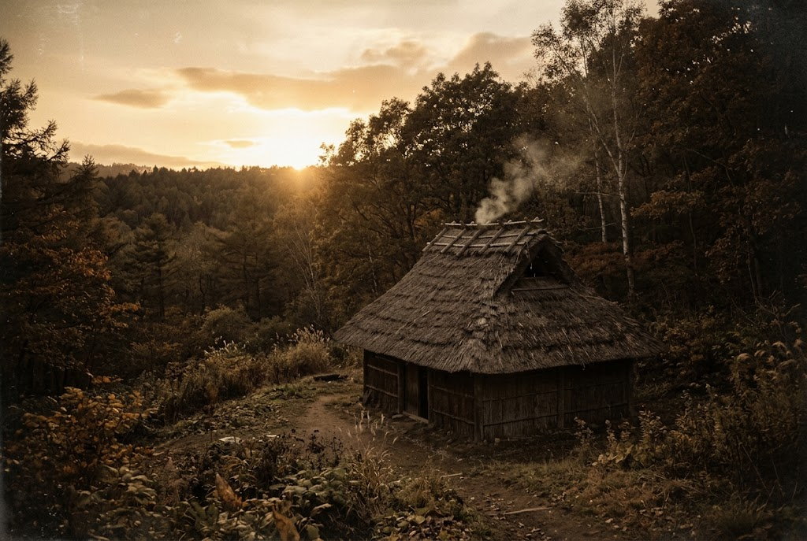
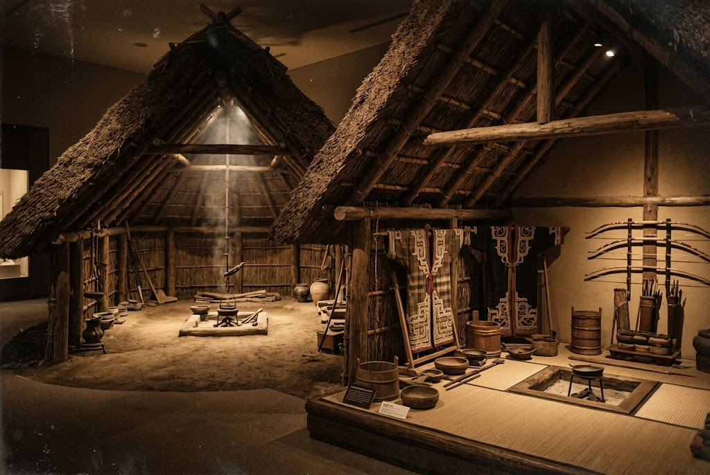
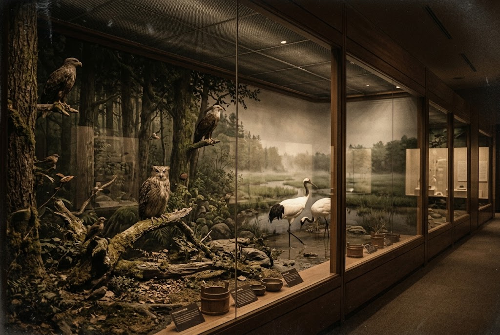

竪穴の暮らし、チセのぬくもり。
北の大地の記憶を、実物とともに。
旭川市博物館の魅力は、竪穴式住居、アイヌのチセ、屯田兵の家といった住居を復元・移築し、実物を体験できること。
写真や資料だけでは伝わらない、土地の人々の息づかいを、館内でゆっくりとお楽しみください。
館内は上層・下層の2層構造。階ごとに異なる時間旅行をお楽しみいただけます。

アイヌの伝統的な住居「チセ」や竪穴式住居の模型を通して、実際の生活様式がリアルに再現されています。民族装飾品や武具なども展示されています。

旭川周辺の自然環境や動植物について学べます。野鳥のはく製展示もあり、バードウォッチング愛好者にも人気です。
平日の夕方に訪問。ゆっくり観る時間はなかったが、楽しめた。詳しく説明をみたい人のために、A4の用紙に解説が書かれており、自由に持ち帰れる。館内は涼しく、そんなに広くはないので短時間で観てまわれます。
300円ちょっとで入れる博物館とは思えないほど、展示が精緻で高レベル。小一時間程度あればだいたい観れるので、旭川にお寄りの際は是非おすすめ。平日行きましたがめちゃくちゃ空いてて、ゆっくり堪能できました。
1Fはアイヌ文化中心、地下は縄文から戦後までの文化と、自然史や生物学的な展示もあり、バラエティに富んでいる。強いて言えば、旭川の代名詞のひとつである第7師団の情報が薄めなのが、ちょっと残念。そこは割り切って北鎮記念館のほうに征かれたい。
| 施設名 | 旭川市博物館 |
|---|---|
| 住所 | 旭川市神楽3条7丁目 |
| 休館日 | 第2・第4月曜日（月曜日が祝日の場合は翌日の火曜日）、年末年始（12月30日〜1月4日） ※6月から9月までの間は無休 |
| 公式サイト | https://www.city.asahikawa.hokkaido.jp/hakubutukan/ |
| お問い合わせ | お問い合わせフォーム |